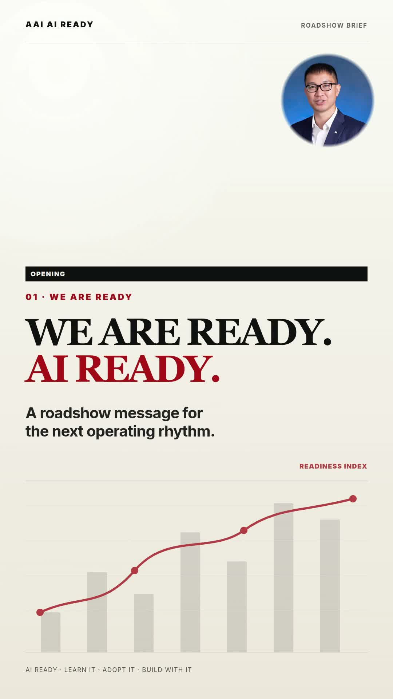
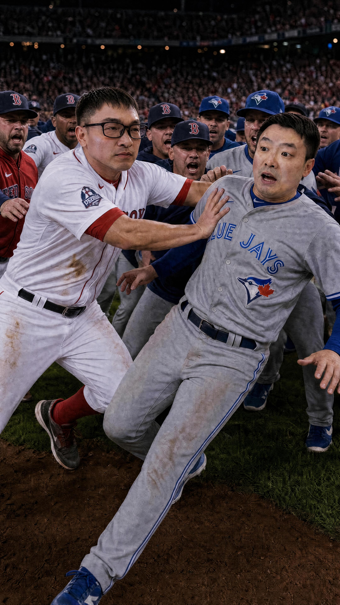

Engineer. CEO. Boston sports loyalist.
Ir Dr. Derrick Pang, JP
A playful fan hub for the CEO of Asia Allied Infrastructure, built with boardroom polish, Fenway red, and enough charm for a standing ovation.
BOS
7
FANS
11
Official reference
Boardroom Credentials, Fan-Club Energy
Based on Asia Allied Infrastructure's director profile, Derrick has more than 27 years of civil engineering design and construction experience across the United States and Hong Kong. He joined the group in 2001 and now leads the CEO office, management committee, and multiple business boards.
Gallery
Handsome Derrick Wall




Boston Corner
Red Sox Spirit, Boston Backbone
Red Sox red, Fenway scoreboard vibes, and nods to the Celtics, Bruins, and Patriots give the site the Boston sports edge Derrick loves.
Red Sox
Celtics
Bruins
Patriots
Video Wall
Popular Channel Picks
Fan Zone
Interactive Games
Fenway Batting
Click the ball before the pitch clock runs out.
Derrick Trivia
Which university awarded Derrick his MEng?
Boston Match
Match all Boston fan badges.